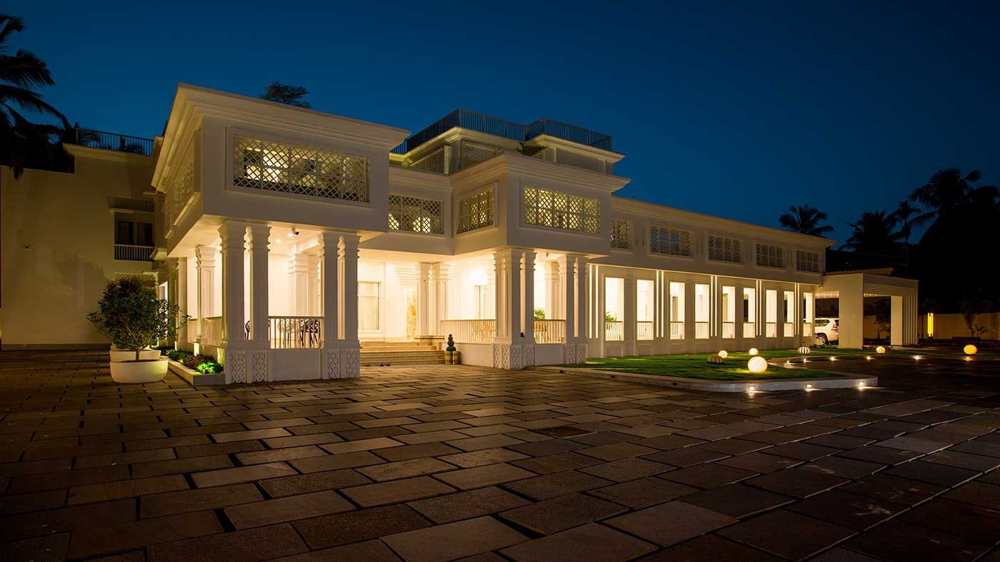
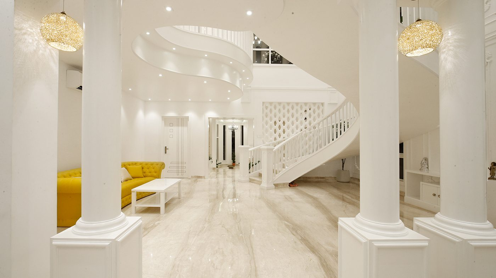
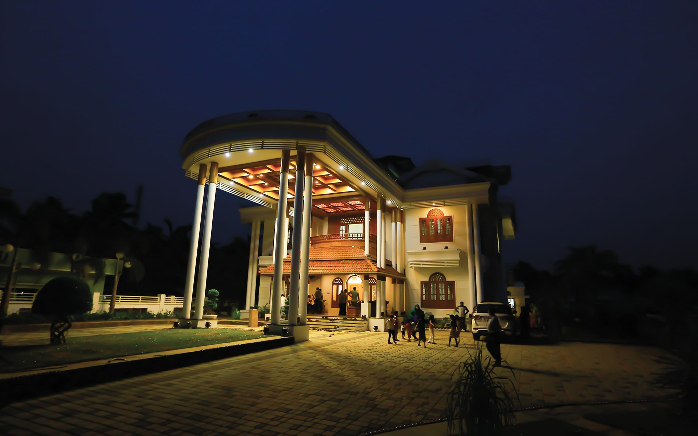
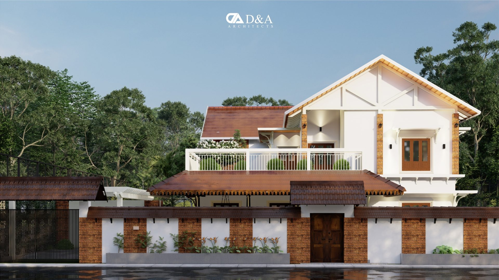
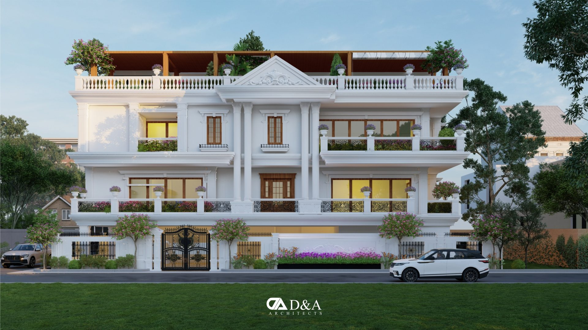
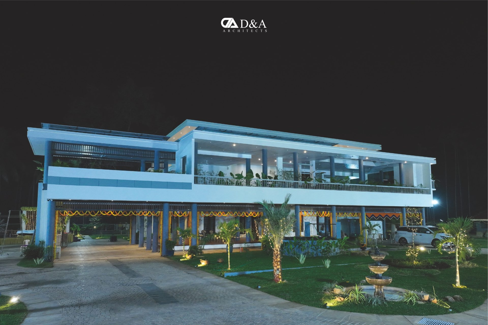

A website concept prepared by RJ for Darvish Architects. Projects and photographs from darvisharchitects.com.
Villas and residences in Kerala, Karnataka, Maharashtra and beyond.
Six of the studio's projects






Call the studio in Kozhikode.